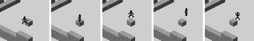
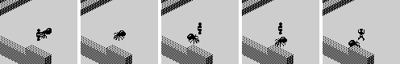
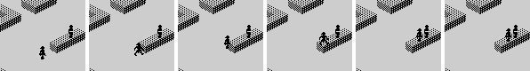

| Ant Attack | How people move |
Everything that moves in Ant Attack -- the player, the person to be rescued, the grenade and the ants -- is moved by one routine, MOVE_OBJECT, reached through MOVE_OR_RESPAWN. Positions are whole cells and whole blocks: a step is a cell and a drop is a block, one a frame, and there is nothing in between. This page sets out the record, what counts as solid, and the order in which MOVE_OBJECT decides what an object does, then runs the game's own code on a set of situations to show what it makes of each.
Eight records of 16 bytes at PLAYER, in the order GAME_FRAME (GAME_FRAME) moves them after the player: the rescued person (MOVE_RESCUEE), the grenade (MOVE_GRENADE), the five ants (MOVE_ANTS). BASIC fills them at the start of every level from the DATA in lines 110 to 180, and these are the values it sets, read from the program as it loads (a dash is -1 in the DATA: that byte is left alone):
| Field | The player | The rescued person | The grenade | Ant 1 | Ant 2 | Ant 3 | Ant 4 | Ant 5 | |
|---|---|---|---|---|---|---|---|---|---|
| +$00 | x | $00 | – | $00 | – | – | – | – | – |
| +$01 | y | $00 | – | $00 | – | – | – | – | – |
| +$02 | height | 0 | – | 0 | – | – | – | – | – |
| +$03 | first frame | – | – | $68 | $F8 | $F8 | $F8 | $F8 | $F8 |
| +$04 | facing | 2 | 0 | 0 | 0 | 0 | 0 | 0 | 0 |
| +$05 | falling | 0 | 0 | 0 | 0 | 0 | 0 | 0 | 0 |
| +$06 | stunned | 0 | 4 | 0 | 0 | 0 | 0 | 0 | 0 |
| +$07 | flags | $01 | $11 | $10 | $04 | $04 | $04 | $04 | $04 |
| +$08 | animation | 0 | 3 | 0 | 0 | 0 | 0 | 0 | 0 |
| +$09 | explosion | 1 | 0 | 1 | 1 | 1 | 1 | 1 | 1 |
| +$0A | home x | $B9 | $00 | $00 | $BA | $B8 | $B6 | $B4 | $B2 |
| +$0B | home y | $04 | $00 | $40 | $A8 | $A8 | $A8 | $A8 | $A8 |
| +$0C | home height | 0 | 0 | 0 | 0 | 0 | 0 | 0 | 0 |
| +$0D | +$0D | 0 | 0 | 0 | 20 | 2 | 2 | 2 | 2 |
| +$0E | +$0E | 0 | 0 | 0 | 1 | 4 | 3 | 2 | 1 |
| +$0F | event | 0 | 0 | 0 | 0 | 0 | 0 | 0 | 0 |
Only the map. TEST_MAP_BIT answers whether a cell has a block at a height, and everything asks it. The people are not in the map, so nothing collides with them; the ants are, put there by TOGGLE_MAP_BIT, so everything collides with the ants. Its answers, run on a cell with blocks at heights 0 and 2 inside the walls, and on a cell outside:
| Height | Inside the walls | Outside |
|---|---|---|
| -1 | solid | solid |
| 0 | solid | empty |
| 1 | empty | empty |
| 2 | solid | empty |
| 3 | empty | empty |
| 4 | empty | empty |
| 5 | empty | empty |
| 6 | empty | empty |
| 7 | solid | solid |
Height -1 is always solid, which is what the ground is; 6, one above the tallest block, is always empty; 7 and above are solid, a ceiling no jump gets through. Outside the walls, with x or y below $80, there is nothing but the ground.
The questions are asked in this order, and the first that applies decides the frame:
The player's keys are read into the flags first (READ_CONTROLS): V is bit 2 and C bit 1, every frame, so they act only while held. SYMBOL SHIFT and M turn a quarter each frame they are held -- not while stunned. And after the move, CHOOSE_FRAME picks the picture from the state: the blast, lying down for a long stun, arms out for a short one, arms up falling, legs moving walking.
Each row is a situation built on a patch of open ground inside the walls, with the ants moved out of the way, and then left to the game: the frames are the game's own, run in the simulator when this page was built, and read after each frame's drawing (before the events are cleared). Positions are cells along the way the one followed faces, from where it started, and heights.
| Situation | Keys | What the code says | What it did |
|---|---|---|---|
| Walking on open ground | V | a cell a frame, each a step (an event for the click) | The player, frame by frame: 1: +1, h0 (a step); 2: +2, h0 (a step); 3: +3, h0 (a step). |
| Walking into a wall one block high | V | blocked: no step, and the player cannot step up (no bit 4) | The player, frame by frame: 1: +0, h0; 2: +0, h0; 3: +0, h0. |
| The same, jumping as well (V and C) | V and C | up a block; next frame the grace frame of the fall walks him onto the wall; with C still held, he jumps again | The player, frame by frame: 1: +0, h1; 2: +1, h1 (falling 1, a step); 3: +1, h2; 4: +2, h2 (falling 1, a step); 5: +2, h1 (falling 2). |
| Jumping at a wall two blocks high | V and C | up a block, but the way ahead is still blocked, so he drops back | The player, frame by frame: 1: +0, h1; 2: +0, h1 (falling 1); 3: +0, h0 (falling 2); 4: +0, h0 (falling 2, stunned 2, a step); 5: +0, h0 (stunned 1). |
| Jumping a cell short of the wall | V and C | up, a step forward in the air into the empty cell, and down again: a jump covers one cell | The player, frame by frame: 1: +0, h1; 2: +1, h1 (falling 1, a step); 3: +1, h0 (falling 2); 4: +1, h0 (falling 2, stunned 2, a step); 5: +1, h0 (stunned 1). |
| Jumping under a roof (C) | C | no room above: no jump | The player, frame by frame: 1: +0, h0; 2: +0, h0. |
| Walking off a ledge one block high | V | a step off the edge, the grace frame's step, then the drop | The player, frame by frame: 1: +1, h1 (a step); 2: +2, h1 (falling 1, a step); 3: +2, h0 (falling 2); 4: +2, h0 (falling 2, stunned 2, a step); 5: +2, h0 (stunned 1). |
| Walking over a one-cell gap | V | the grace frame carries him over the gap, and he walks on | The player, frame by frame: 1: +1, h1 (a step); 2: +2, h1 (falling 1, a step); 3: +3, h1 (a step); 4: +4, h1 (a step); 5: +5, h1 (a step). |
| An ant walks into the player's cell | none | the ant is in the map, so the player's own cell is full: bitten, pushed up a block, and a point of energy off | The player, frame by frame: 1: +0, h0; 2: +0, h0; 3: +0, h1 (bitten); 4: +0, h1 (falling 1); 5: +0, h0 (falling 2). Energy 20 before, 19 after. |
| The rescued person, following, meets a one-block wall | none | blocked, but bit 4 is set: up a block in her own cell, then on over the wall | The rescued person, frame by frame: 1: +1, h0 (a step); 2: +2, h0 (a step); 3: +2, h1; 4: +3, h1 (falling 1, a step); 5: +4, h1 (a step); 6: +4, h1. |
| The same, but the wall is two blocks high | none | up a block, still blocked, up another in her own cell -- but that used the grace frame, so she falls back: two blocks stop her | The rescued person, frame by frame: 1: +1, h0 (a step); 2: +2, h0 (a step); 3: +2, h1; 4: +2, h2 (falling 1); 5: +2, h1 (falling 2); 6: +2, h0 (falling 3); 7: +2, h0 (falling 3, stunned 3, a step); 8: +2, h0 (stunned 2). |
| The player standing on the rescued person's head | none | bit 0: she counts as something to stand on | The player, frame by frame: 1: +0, h1; 2: +0, h1; 3: +0, h1. |
| The player dropped five blocks onto her head | none | SHARE_CELL clears his fall a block above her: no landing at all | The player, frame by frame: 1: +0, h5 (falling 1); 2: +0, h4 (falling 2); 3: +0, h3 (falling 3); 4: +0, h2 (falling 4); 5: +0, h1; 6: +0, h1; 7: +0, h1. |
| The player walks off with her on his head | V | nothing carries her: she is left in the air, and falls | The rescued person, frame by frame: 1: +0, h1 (falling 1); 2: +0, h0 (falling 2); 3: +0, h0 (falling 2, stunned 2, a step); 4: +0, h0 (stunned 1); 5: +0, h0. |
| The player falls five blocks while stunned | none | the stunned branch clears the fall count, so it is never landed | The player, frame by frame: 1: +0, h5 (falling 1, stunned 3); 2: +0, h4 (falling 2, stunned 3); 3: +0, h3 (falling 3, stunned 3); 4: +0, h2 (falling 4, stunned 3); 5: +0, h1 (falling 5, stunned 3); 6: +0, h0 (falling 6, stunned 3); 7: +0, h0 (stunned 2); 8: +0, h0 (stunned 1). |
| The player drops three blocks onto a stunned ant | none | landing at height 1: PARALYSE_ANT finds the ant underneath | The player, frame by frame: 1: +0, h3 (falling 1); 2: +0, h2 (falling 2); 3: +0, h1 (falling 3); 4: +0, h1 (falling 3, stunned 3, a step); 5: +0, h1 (stunned 2). The ant's stun count: $FF, paralysed for good. |
| The rescued person, following, falls five blocks | none | a bad fall, as for the player | The rescued person, frame by frame: 1: -1, h5 (falling 1, a step); 2: -1, h4 (falling 2); 3: -1, h3 (falling 3); 4: -1, h2 (falling 4); 5: -1, h1 (falling 5); 6: -1, h0 (falling 6); 7: -1, h0 (stunned 48, a bad fall); 8: -1, h0 (stunned 47). |

Climbing a one-block wall with V and C held, a frame a picture: up, onto the wall, up again, forward into the air, and down.

An ant walks into the player's cell: the frame after, he is bitten and pushed up a block, and then drops back.

The rescued person following the player up a step on her own.
A fall is counted in frames at +$05, the grace frame included, so a drop of n blocks is n + 1 frames. LANDED makes it a step if it was under five frames, and stuns for as many frames as it lasted; five or more is a bad fall -- “NASTY FALL !” for the player, “HELP! I FELL!” for the rescued person (HANDLE_EVENTS) -- and stuns for eight frames for every frame of it. So four blocks is the most that is safe to drop. The expected figures are worked out from those rules; the others are what the game did, dropping the player from each height over open ground:
| Blocks | Frames falling | Landed on frame | Stun expected | Stun given | Event expected | Event given |
|---|---|---|---|---|---|---|
| 1 | 2 | 3 | 2 | 2 | a step | a step |
| 2 | 3 | 4 | 3 | 3 | a step | a step |
| 3 | 4 | 5 | 4 | 4 | a step | a step |
| 4 | 5 | 6 | 40 | 40 | a bad fall | a bad fall |
| 5 | 6 | 7 | 48 | 48 | a bad fall | a bad fall |
| 6 | 7 | 8 | 56 | 56 | a bad fall | a bad fall |
Every figure is as expected. A stunned person does nothing at all, and at six or seven frames a second a six-block fall costs the player the best part of ten seconds. A short fall is not quite free either: every landing, even from a jump, stuns for two frames or more.
Two ways out of a landing, both in the table above. A fall that ends while the stun count is still running is never landed: the stunned branch comes before the landing and clears the fall count. And two people in one cell a block apart are never falling: SHARE_CELL, run every frame for the rescued person once she follows, clears the player's fall count and both stuns. BASIC starts the rescued person stunned for four frames, enough to swallow a short drop. A landing at height 1 has one more job: it may be on an ant's back, and PARALYSE_ANT looks for one (see the ants).
Bit 0 of the flags lets TEST_BELOW count the other person -- the one IY points at, which for the player is the rescued person and the other way round -- as something to stand on, if they are exactly one block below in the same cell. That is all: nothing carries anyone. Walk out from under someone and they are left standing on air, and fall; walk off someone's head and you fall. The rescued person in the player's own cell is handled by ON_TOP: on top of him she takes his facing and walks on, underneath she stops.